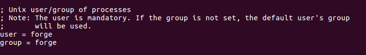

Docker Laravel¶
Sebelum menggunakan docker pada laravel akan dicoba terlebih dahulu untuk menginstall LEMP Stack (Linux, Nginx, MySQL, PHP), Laravel beserta konfigurasinya dengan penjelasannya secara comprehensive.
LEMP Stack + laravel¶
Penginstallan akan dicoba di google VM (Virtual Machine) cloud computing
OS details
Untuk IP public yang didapatkan 35.213.171.109
Note
Penulis tidak menyensor ip public dikarenakan ini untuk tujuan pembelajaran.
Versi Package/Software/Apps
nginx -> 1.15 (dari repository development)
php -> 7.1 (dari repository ondrej)
mysql-server -> 5.7
laravel -> 5.5
Attention
Laravel 5.5 dipilih utamanya karena banyaknya requirement pada laravel 6 dan 7 seperti harus menggunakan php versi 7.2, yang mana tidak setiap librarynya sudah ada (meskipun mungkin laravel hanya membutuhkan extension mbstring dan mcrypt, namun tidak dipungkiri bahwa nantinya akan terdapat depedency extension lain yang belum terdapat pada php versi 7.2)
Install basic tools package¶
Berikut adalah package yang perlu ada di server
git
wget
curl
zip
unzip
htop
Beberapa diantaranya telah terdapat di distribusi Ubuntu versi 18 (wget, git)
Warning
Disarankan untuk menggunakan root user dalam penginstallan package tersebut dan ketika mengkonfigurasi package.
Add repository (nginx + php)¶
Selanjutnya tambahkan repository nginx dan php (optional).
command:
add-apt-repository -y ppa:nginx/development
add-apt-repository -y ppa:ondrej/php
lalu update
command:
apt-get update
Warning
Untuk production sebaiknya gunakan versi stable, atau sebaiknya menggunakan dari default repository.
Install package nginx + php + php library¶
Selanjutnya install package nginx dan php.
Untuk package php akan ditambahkan beberapa library seperti mcrypt, mbstring, dll untuk menjalankan Laravel (lihat requirement di https://laravel.com/docs/7.x/installation)
command:
apt-get install -y \
nginx \
php7.1-fpm \
php7.1-cli \
php7.1-mcrypt \
php7.1-gd \
php7.1-mysql \
php7.1-pgsql \
php7.1-imap \
php7.1-mbstring \
php7.1-xml \
php7.1-curl \
php7.1-bcmath \
php7.1-sqlite3 \
php7.1-xdebug \
php-memcached
Setelahnya cek bahwa nginx dan php sudah berjalan dengan normal
command:
nginx -v
php -v
ps aux | grep php
Attention
Jika menggunakan nginx versi dev (repository development) biasanya setelah penginstallan, service nginx masih belum running.
Atau Bisa dicek dengan command ss, netstat atau lsof yang me-listen port 80
Untuk menjalankan service ketik saja di command dengan nginx maka setelahnya akan berjalan.
command:
nginx
Jika sudah berada di server production direkomendasikan untuk menggunakan package versi stable, baik nginx, php ataupun package lain.
Warning
daemon pada nginx dapat dijalankan dengan menggunakan command nginx -g "daemon off;" untuk daemon yang tidak dijalankan di background (foreground) dan nginx -g "daemon on;" untuk dijalankan di background.
Caption
Install composer¶
Composer merupakan tool untuk depedency management pada PHP yang nantinya akan digunakan untuk menginstall Laravel.
Pada hakikatnya composer adalah file php yang ditaruh ke dalam /usr/bin untuk dijadikan alias.
Berikut untuk menginstall composer dalam satu baris
command:
php -r "readfile('https://getcomposer.org/installer');" | sudo php -- --install-dir=/usr/bin/ --filename=composer
maksud dari command diatas adalah membaca file dari getcomposer.org/installer, lalu dijalankan dengan php (menjadi script php), lalu diletakkan di direktori /usr/bin dan filenya dinamakan composer (untuk alias)
atau mudahnya seperti mengcopy file https://getcomposer.org/installer ke usr/bin/composer
Note
command (alias) php adalah untuk menjalankan script php, misal
php <file.php>
atau bisa dikatakan sama dengan commmand berikut
command:
php composer-setup.php --install-dir=bin --filename=composer
Selanjutnya setelah penginstallan composer dapat dicek dengan mengetikkan command composer
Install laravel¶
Laravel akan diletakkan di direktori /var/www/<project-laravel>
Berikut command yang digunakan untuk menginstall laravel 5.5 dengan direktori root bernama myapp
command:
composer create-project laravel/laravel myapp "5.5.*"
Warning
Jika semisal ram yang digunakan pada cloud computing cukup kecil (dibawah 1 GB), maka proses penginstallan laravel akan mengalami kegagalan (Killed).
Direkomendasikan untuk menggunakan spec server dengan ram diatas 1 GB.
Hint
Jika ingin menggunakan laravel versi development, gunakan command berikut
command:
composer create-project laravel/laravel:dev-develop myapp
Set konfigurasi virtual host nginx¶
Virtual host adalah konfigurasi untuk pembuatan domain name, root path access, konfigurasi fastcgi dan lain lain.
Dalam satu server bisa membuat lebih dari 1 virtual host (misal untuk beberapa subdomain)
Istilah virtual host sering digunakan pada Apache, sedangkan pada nginx disebut sebagai server blocks.
Pada OS debian dan turunannya (ubuntu) biasanya package nginx akan memiliki 2 directory untuk set virtual host yaitu sites-available dan sites-enabled
yang mana sites-available adalah untuk menyimpan configurasi virtual host yang ada/tersedia sedangkan sites-enabled adalah virtual host yang dijalankan.
Metodenya adalah membuat virtual host di sites-available kemudian membuat symlink ke dalam sites-enabled.
Attention
Sejatinya untuk nginx biasanya virtual host akan menggunakan direktori conf.d tanpa harus menggunakan symlink.
Pada debian dan turunannya ditambahkan direktori sites-enabled sebagai virtual host (server blocks)
file /etc/nginx/nginx.conf:
include /etc/nginx/conf.d/*.conf;
include /etc/nginx/sites-enabled/*;
Pada saat penginstallan nginx biasanya sudah terdapat adanya virtual host default (/etc/nginx/sites-availables/default)
file /etc/nginx/sites-availables/default:
server {
listen 80 default_server;
listen [::]:80 default_server;
root /var/www/html;
# Add index.php to the list if you are using PHP
index index.html index.htm index.nginx-debian.html;
server_name _;
location / {
# First attempt to serve request as file, then
# as directory, then fall back to displaying a 404.
try_files $uri $uri/ =404;
}
}
code listen akan membuat nginx me-listen pada port, defaultnya untuk web server adalah 80.
default_server adalah parameter untuk mengindikasikan nginx membaca konfigurasi ini sebagai default server, opsi parameter ini opsional.
Untuk konfigurasi ipv6 adalah menggunakan code berikut.
code:
listen [::]:80 default_server;
Namun biasanya ipv6 sangat jarang digunakan.
code root adalah untuk membuat path access root.
code index adalah untuk membaca file index (apabila ada) secara berurutan (misal pada case diatas akan membaca file index.html, jika tidak ada maka akan membaca file index.htm dan seterusnya)
misal adalah ketika membaca uri tanpa adanya keterangan.
semisal mengakses ip 25.139.242.424/ tanpa ada tambahan direktori atau file maka ini akan mencoba mencari file index.html, kemudian kalau tidak ada akan mencoba mencari file index.htm dst.
code server_name adalah nama server yang akan digunakan dalam identifikasi virtual host yang akan digunakan, misal server_name www.site.com site.com.
Hint
server_name bisa lebih dari 1 sites, artinya bisa diberikan domain atau subdomain lebih dari 1
Tip
konsep domain (case droplet)
Each server block in your /etc/nginx/sites-enabled/default will have a server_name.
Server name is what it will listen for, together with your port settings. So let’s say you have a domain, you point your A name like: example.com to your droplets IP. This lets the DNS server know where the domain should go (like a street adress).
Then you can set a server block inside the default file, with server name: example.com But you wish to also have this accessible via www.example.com, that mens you change it like so: server_name example.com www.example.com;
If you then want to have a subdomain like: yolo.example.com and have it work in another directory, you make another server block and you there add server name: yolo.example.com
You also have to add the a name in the DNS agian, point yolo.example.com to your ip. For maximum flexibility use: a name>floating ip>your server
Jadi intinya tiap cloud (droplet, gcp, aws) mereka akan memiliki DNS, yang mana ini untuk mengarahkan suatu domain ke ip
Di local computer juga dapat dibuat menggunakan dnsmasq (third party) atau /etc/hosts (default package di linux)
Di local computer, biasanya domain yang dibuat (pada dnsmasq atau /etc/hosts) akan diarahkan ke 127.0.0.1 yang sudah menjadi standard tiap pemrograman
Namun dnsmasq lebih direkomendasikan, karena ini tidak selalu berjalan (dapat di-disable) sedangkan pada /etc/hosts akan selalu running.
Dnsmasq nantinya juga akan m
code location adalah untuk konfigurasi saat berada pada suatu path atau file dengan ekstensi tertentu (misal .php)
berikut penjelasan sederhananya
code:
location / {
try_files $uri $uri/ =404
}
artinya adalah ketika mengakses root (/) maka dia akan mencari file kalau tidak ada ya direktori, kalau gak ada keluar 404 (not found)
misal akses 25.139.242.424/foo
maka pertama dia akan membaca file /var/www/html/foo kalau tidak ada kemudian membaca foo sebagai directory /var/www/myaapp/public/foo/ dan jika masih tidak ada maka akan keluar 404 (not found)
Untuk konfigurasi virtual host di laravel dapat menggunakan code sebagai berikut
file /etc/nginx/sites-availables/default:
server {
listen 80 default_server;
root /var/www/myapp/public;
index index.html index.htm index.php;
server_name _;
location / {
try_files $uri $uri/ /index.php$is_args$args;
}
location ~ \.php$ {
include snippets/fastcgi-php.conf;
fastcgi_pass unix:/var/run/php/php7.1-fpm.sock;
}
}
Warning
Untuk error akan tetap menggunakan default konfigurasi (/etc/nginx/nginx.conf) yaitu akan menulis pada /var/log/nginx/error.log
Untuk code location dibuat secara default membaca file index.php (/var/www/myapp/public/index.php),
Note
Dengan konfigurasi location tersebut, maka nginx hanya bisa mengakses directory public seperti file favicon.ico, css/app.css dan tidak bisa keluar.
Kemudian daripada di location menggunakan 404 sebaiknya diarahkan untuk membaca file /index.php (var/www/html/myapp/public/index.php) dengan menambahkan adanya parameter (jika terdapat adanya query string ?)
dokumentasi pada nginx $is_args adalah untuk question mark ? sedangkan $args adalah arguments yang akan dipass
semisal mengakses 25.139.242.424/foo?param=value
maka query string itu akan dikasihkan (pass) ke index.php (file /var/www/myapp/public/index.php) dan bukan ke foo
Kemudian pada code location ~ \.php adalah untuk konfigurasi saat membaca file php.
Jika menggunakan konsep virtual host laravel seperti diatas, maka otomatis akan membaca file /var/www/myapp/public/index.php which is ini akan langsung menggunakan code ini.
code include snippets/fastcgi-php.conf adalah file untuk membuat web request dapat dibaca oleh php (language php)
code fastcgi_pass unix:/var/run/php/php7.1-fpm.sock adalah untuk menggunakan unix socket php-fpm dalam membaca file php
Attention
Sebenarnya secara default php menggunakan tcp/ip yang me-listen port 9000, contoh 127.0.0.1:9000
Alasan utama menggunakan unix socket adalah supaya lebih cepat (meskipun ini tidak terlalu signifikan dibandingkan dengan tcp) karena ini menggunakan local file.
Jika semisal ingin menggunakan tcp/ip maka berikut settingannya
code:
fastcgi_pass 127.0.0.1:9000;
Jika ingin mengetest konfigurasi virtual host tidak terdapat adanya error dapat mengggunakan command nginx -t atau service nginx configtest
Kemudian restart service nginx
command:
service nginx reload
Note
jika muncul error misal:
``Job for nginx.service failed because the control process exited with error code. See "systemctl status nginx.service" and "journalctl -xe" for details.``
gunakan systemctl status nginx untuk me-trace
Apabila jika errornya adalah Address already in use maka kemungkinan besar service nginx telah berjalan dan tidak dapat di-restart,
seperti berikut error secara details:
Jun 05 04:42:43 localhost nginx[16439]: nginx: [emerg] bind() to 0.0.0.0:80 failed (98: Address already in use)
solusinya adalah matikan dahulu service nginx
command:
fuser -k 80/tcp
Lalu restart nginx atau jalankan secara normal (menggunakan command nginx -g "daemon on")
Untuk mengecek dapat menggunakan command berikut:
sudo ss -lptn 'sport = :80'
atau
sudo netstat -nlp | grep :80
atau
sudo lsof -n -i :80 | grep LISTEN
Permission¶
Apabila terdapat error dalam menulis file log seperti berikut
maka itu dikarenakan file log (/var/www/myapp/storage/logs/laravel.log) memiliki user/group root, sehingga tidak dapat di-write oleh service php-fpm (yang menggunakan user www-data)
Laravel hanya membutuhkan 2 directory yaitu bootstrap dan resources untuk dapat di write/read
kedua directory itu biasa untuk menyimpan cache, seperti bootstrap untuk cache framework utama, resource untuk view cache, cache object (ketika menggunakan code Cache::remember() akan disimpan disini)
Untuk lebih memastikan berikut untuk mengecek service php-fpm, dia menggunakan user apa
command:
ps aux | grep php
dimana ternyata php-fpm worker running sebagai user www-data, maka dari itu 2 directory tersebut perlu diganti user dan groupnya
command:
chown -R www-data: bootstrap/ storage/
Permission dengan user non-root dalam laravel¶
Menggunakan user root kurang disarankan karena ini mengakibatkan semua privilege akan dimiliki.
Di directory project laravel sendiri sebaiknya hindari user root sebagai user dan group, dan sebagai gantinya gunakan user lain (non-root)
Berikut tahap pembuatannya
buat user (adduser)
command:
adduser forge
Secara otomatis akan membuat directory
/home/forge(home directory untuk user forge)Buat user forge untuk dapat run sudo command
command:
usermod -aG sudo forge
param
-aGadalahappend secondary group, artinya memberikan superuser privilege (sudo) ke user forgeUser ini dapat mengeksekusi
sudo <command>dengan memberikan password (dari pembuatan user sebelumnya)Memindah project laravel directory ke home user baru
Pindahkan project laravel ke directory home user forge, kemudian ubah owner (dari awalnya
rootatauwww-datamenjadiforge)command:
sudo mv /var/www/myapp/ /home/forge sudo chown -R forge: /home/forge/myapp/
lalu ubah konfigurasi di nginx (path access)
file /etc/nginx/sites-availables/default:
... root /home/forge/myapp/public;
restart nginx dan php
command:
sudo service nginx reload dan sudo service php7.1-fpm reload
Attention
Jika melakukan penggantion
owner/groupproject laravel seperti diatas, direkomendasikan untuk menghapus cacheKarena jika tidak, apabila sebelumnya sudah terdapat cache pada
/storage/framework/views/maka selanjutnya akan menggunakan cache tersebut, dan itu cukup berbahaya.Karena pada pembuatan cache selanjurnya akan membuat file log baru, yang mana nantinya akan terdapat adanya error write log
/home/forge/myapp/storage/logs/laravel.logPastikan menghapus semua file di
storage/framework/views/Dikarenakan seluruh project laravel diubah owner dan group, maka seperti sebelumnya akan terdapat error writing log.
Cara termudah tentu mengubah direktori bootstrap, resources dan storages ke dalam www-data
Namun terdapat cara lain yaitu mengubah user untuk service php-fpm, yaitu mengubah konfigurasi di file
/etc/php/7.1/fpm/pool.d/www.confdi bagian user dan group ubah menjadi
forge, kemudian restart php dan cek kembali (ps aux | grep php)selanjutnya php-fpm akan running sebagai user forge
Membuat user forge run command service php-fpm reload tanpa sudo (OPTIONAL)
Pada command menggunakan super user pada user non-root biasanya perlu melakukan masukkan password seperti misal restart php
sudo service php7.1-fpm reload-> enter passwordUntuk menghilangkan password tersebut dapat menggunakan fitur di sudoer, yaitu menambahkan command pada file di
/etc/sudoers.d/<nama-file-command>command:
sudo visudo -f /etc/sudoers.d/php-fpm forge ALL=NOPASSWD: /usr/sbin/service php7.1-fpm reload
Warning
Pengeditan di sudoer sangat berbahya, karena jika terjadi kesalahan/error pada file tersebut, maka tidak akan bisa melakukan command
sudolagi dan akan memungkinkan tidak akan bisa masuk ke server dengan user root.Oleh karenanya disarankan menggunakan editor
visudosebagai ganti daripadanano
Konfigurasi php¶
Warning
Section berikut akan membahas tentang beberapa konfigurasi kecil dalam php
module php¶
Secara default ketika menginstall php maka otomatis di directori /etc/php akan terdapat lebih dari 1 versi php (dari versi 5.3, 5.6, 7.0, 7.1 bahkan sampai yang terbaru) yang kesemuanya untuk konfigurasi php (meskipun yang digunakan adalah yang diinstall, misal dalam case ini adalah 7.1)
Dalam php dikenal istilah SAPI (server api) yang mana ini adalah mekanisme untuk mengontrol interaksi antara “outside world” dan php (zend engine), atau singkatnya untuk menggunakan php.
SAPI pada php dipisah menjadi 2 bagian yaitu fpm (php-fpm) dan cli (command line php) yang berada di direktori konfigurasi (/etc/php/<versi-php>/)
cli pada php dijalankan/run pada command line, misal command php -v untuk melihat versi php, atau php <nama-file.php> untuk me-execute file php.
sedangkan fpm adalah ketika menjalankan php melalui web request (via web server seperti nginx)
SAPI ini dapat diberikan module yang disediakan pada mods-available.
Untuk mengaplikasikan module tersebut, hanya perlu membuat symlink, misal untuk fpm diletakkan di fpm/conf.d/ dan cli diletakkan di cli/conf.d/
Antara module pada cli dan module fpm bisa berbeda tergantung pengaturan symlink.
Misalkan menghilangkan module xdebug, yang dapat dicek ketika command melihat versi php php -v
Untuk menghilangkannya hapus file cli/conf.d/20-xdebug.ini
maka ketika melakukan command php -v akan menghilang
Kemudian untuk membuat symlink daripada module xdebug tersebut gunakan command dibawah
commmand:
sudo ln -s /etc/php/7.1/mods-available/xdebug.ini 20-xdebug.ini
tidak perlu me-restart saat menghapus symlink pada cli
Note
adanya penomoran pada module SAPI hanya untuk prioritas saja
Terdapat pula cara lain untuk disable / enable module tersebut dengan command:
sudo phpdismod -s cli xdebug
sudo phpenmod -s cli xdebug
Note
Jika melakukan perubahan di SAPI fpm maka service php perlu di-restart
Instalasi MySQL¶
command:
sudo apt-get install -y mysql-server
Secure mysql¶
Berikut untuk lebih mengamankan MySQL
command:
sudo mysql_secure_installation
Setelah memasukkan password, selanjutnya akan ada beberapa pertanyaan
VALIDATE PASSWORD PLUGIN
ini untuk lebih membuat secure password, jawab
no(n)change password for the root
jawab
no(n)remove anonymous user
jawab
yes(y)disallow root login remotely ?
jawab
yes, yang artinya saat user root melakukan login, tidak akan bisa dilakukan dengan remote (loginrootharus melalui server/cloud di mana MySQL diinstall)remove test database
jawab
yes(y)reload privileges
jawab
yes(y)
User non-root di MySQL¶
create user and database
command:
create user myuser@localhost identified by 'secret';
create database myapp charset utf8mb4;
Diatas adalah membuat user myuser yang nantinya hanya bisa mengakses (login) lewat localhost (dimana mysql diinstall)
Note
mb4 adalah verrsi complete dari utf8 (memiliki 4 bit character) yang mana pada versi ini dapat memasukkan karakter tambahan seperti emoji
grant user
command:
grant all privileges on myapp.* to myuser@localhost
flush privileges;
Attention
Direkomendasikan untuk tidak membuat user dengan host private network pada MySQL.
Karena itu berarti jika semisal server/cloud berada di GCP (Google Cloud Platform), maka hanya server pada GCP yang dapat mengakses MySQL (secara remote) dengan menggunakan private network tersebut.
Jika server lain berada di luar GCP, misal AWS maka pengaksesan tidak akan bisa.
Hint
Jika menggunakan GCP pastikan telah membuat setting network VPC (untuk membuka port) agar nantinya tiap software yang diinstall dapat mengakses port nya.
Alternatif lain dapat menggunakan lewat package terminal yaitu iptables atau ufw
redis¶
Install redis
command:
sudo apt-get install -y redis-server
Untuk menggunakan redis di laravel edit file .env
file .env:
CACHE_DRIVER=redis
SESSION_DRIVER=redis
Kemudian jika terdapat error (require redis) install package tersebut
command:
composer require predis/redis
Docker Compose laravel¶
Note
Dockerfile memerlukan context karena itu akan menjadi default root path
coba lihat repo https://github.com/mhilker/docker-nginx-php-example
Note
Setiap ada perubahan, terutama di dockerfile, apalagi jika semisal terdapat file nginx.conf (file /etc/nginx/conf.d) yang dibuild di dockerfile juga harus melakukan build ulang jika tidak maka ini akan menggunakan image sebelumnya
Note
Jika hanya file volume (mount) dari docker-compose bisa distop (Ctrl + C) lalu docker-compose up
Note
jangan melakukan git clone di Dockerfile, karena dia hanya akan disimpan di image seharusnya itu stateful, disimpan di volume docker atau local computer dan di mount
jika semisal ingin membuat docker-compose yang sekali jadi, seperti docker-compose, dockerfile dan laravel sebaiknya
nah idenya begini, jadi biarkan saja docker dan segala file confignya terus buat deh file executable, disitu akan git clone, dan juga buat virtual host (file .conf nginx) dan dibuat juga di /etc/hosts jadi lengkap sudah kan hehe
Note
jadi ketika menggunakan docker-compose dimana ini menggunakan app maka bisa melakukan adanya
misal:
#PHP Service
app:
build:
context: ./service/php/image
dockerfile: php.dockerfile
container_name: prefixapp
restart: unless-stopped
tty: true
maka hasilnya adalah container dengan nama prefix app
Name”: “/prefixapp”,
lalu di networks terdapat aliases
- “Networks”: {
- “laravel55-docker_app-network”: {
“IPAMConfig”: null, “Links”: null, “Aliases”: [
“6d8db977702f”, “app”
],
nah itu bisa menggunakan app:9000 atau prefixapp:9000 (di nginx config)
dicoba di image nginx juga bisa ping app:9000 atau prefixapp:9000, tapi paling pas ya gunain container_name (jadinya prefixapp:9000)
Note
opsi tty: true pada docker-compose.yml sebenarnya untuk melakukan adanya interactive shell jika semisal ingin menggunakan docker-compose
lebih lanjut terdapat 2 opsi:
stdin_open: true # docker run -i
tty: true
Hint
Penamaan container
harus merepresentasikan parent
misal apakah itu reference project, single proejct (edg)
nama container harus menggunakan nama script
MIsal apakah php, nginx dan bukan scripting, webserver
kombinasinya adalah
php-rd (service php di project reference)
nginx-edg (service nginx di project reference)
jika semisal menggunakan lebih dari 1 service sama tidak bingung
webserver-rd dan webserver-edg atau nginx-rd, nginx-edg
malah brand nya lebih susah
keterangan versi dan tipe tidak diperlukan
karena ini akan lebih menyusahkan, seperti msial php.7.0
tapi sebaiknya ditulis di docker-compose
tipe juga jangan misal php7.0-fpm, terlalu sulit
jadi biar php saja
Hint
Ingat konsep environment,
jika terdapat environment di docker-compose
maka itu tidak lain adalah menambahkan adanya environment layaknya docker run -e [nama-environment] [value-environment]
dan itu seperti dimasukkan sebelum adanya cmd/entrypoint (dalam dockerfile)
jadi bisa untuk overwrite dari environment sebelumnya, atau bisa juga untuk membuat environment baru
Hint
Pada docker-compose adanya image adalah untuk membuat adanya nama image
sama halnya dengan command build
command:
docker build webapp:1.0 .
artinya ini perlu diberikan jika akan membuat image (melalui Dockerfile)
jika tidak nama daripada image akan menggunakan format [nama-directory_nama-image]
Basic Laravel¶
Membahas docker di dalam laravel, dan tidak terlalu banyak
Secara default sebenarnya konfigurasi dalam laravel tidak terlalu banyak, terlebih pada PHP
jadi ternyata volume itu bisa langsung overwrite file
contoh:
volumes:
- ./src:/var/www/html
- ./nginx/default.conf:/etc/nginx/conf.d/default.conf
misal yang dioverwrite adalah file default.conf
tapi disarankan tentu adalah folder, karena jika semisal multi conf bagaimana ?
nah terkadang kalau hanya docker-compose up itu hanya akan menggunakan yang telah ada jadi lets say kan ada Dockerfile, nah kalau file Dockerfile itu ada pembaharuan maka harus dibuild (jadi image) nah disarankan menggunakan
command:
docker-compose up --build
jika tidak, meski sudah mengubah Dockerfile maka itu tidak akan update
jadi katakanlah ada perubahan di docker-compose.yml selain image dockerfile seperti ports dll, maka itu tidak perlu di build (karena build hanya untuk image)
dan satu lagi ternyata dalam docker build image, biasanya dia tidak menunjukkan kapan dia akan build jadi katakanlah sudah dibuat baru kan, lalu di build, maka akan menunjuka
misal php7.0-fpm adalah 20 months ago php7.2-fpm adalah 2 months ago php7.4-fpm adalah 2 weeks ago
jadi tergantung dari image docker (docker hub repo)
dan bukan ketika build
git clone laravel 55
git clone –single-branch –branch 5.5 git@github.com:laravel/laravel.git .
Note
ini artinya ketika buat docker-composer dimana php dan nginx terpisah, maka hanya bisa menggunakan tcp
atau dijadikan satu container
https://gist.github.com/Machy8/f7bd27b2e6b01dd9e057c2e90e5f49d3
Pada laravel terdapat berbagai hal yang perlu dipersiapkan, semisal adalah extension php (mbstring, gd, dll) atau composer (package installer php)
Untuk memudahkan dalam pembuatan docker laravel maka sebaiknya gunakan directory baru sebagai root path, semisal docker-laravel
Advance Laravel¶
membahas laravel secara lebih dalam (php docker file ada tambahan, lalu ada node lengkap)
Multi Laravel docker¶
Multi laravel docker diperuntukkan
directory:
├── app
│ └── laravel
├── config
│ ├── mysql
│ │ └── my.cnf
│ ├── nginx
│ │ └── conf.d
│ │ └── laravelmaster.conf
│ └── php-fpm
│ ├── Dockerfile
│ └── php.ini
└── docker-compose.yml
Hint
Untuk keterangan lebih lanjut bisa melihat pada section docker compose project recommendation
Directory structure¶
based on https://github.com/shsma/laravel-docker
directory:
├── app
│ └── laravel
├── config
│ ├── mysql
│ │ └── my.cnf
│ ├── nginx
│ │ └── conf.d
│ │ └── laravelmaster.conf
│ └── php-fpm
│ ├── Dockerfile
│ └── php.ini
└── docker-compose.yml
file docker-compose.yml:
version: '3'
services:
#PHP Service
app:
build:
context: ./config/php-fpm
dockerfile: Dockerfile
container_name: app
restart: unless-stopped
tty: true
environment:
SERVICE_NAME: app
SERVICE_TAGS: dev
working_dir: /var/www
volumes:
- ./app:/var/www
- ./config/docker/php/local.ini:/usr/local/etc/php/conf.d/local.ini
networks:
- app-network
#Nginx Service
webserver:
image: nginx:alpine
container_name: webserver
restart: unless-stopped
tty: true
environment:
- VIRTUAL_PORT=80
- VIRTUAL_HOST=project.local
ports:
- "80:80"
- "443:443"
volumes:
- ./app:/var/www
- ./config/docker/nginx/conf.d/:/etc/nginx/conf.d/
networks:
- app-network
#MySQL Service
db:
image: mysql:5.7.22
container_name: db
restart: unless-stopped
tty: true
ports:
- "3306:3306"
environment:
MYSQL_ROOT_PASSWORD: root
MYSQL_DATABASE: laravel
MYSQL_USER: root
MYSQL_PASSWORD: root
SERVICE_TAGS: dev
SERVICE_NAME: mysql
volumes:
- dbdata:/var/lib/mysql/
- ./config/docker/mysql/my.cnf:/etc/mysql/my.cnf
networks:
- app-network
#Docker Networks
networks:
app-network:
driver: bridge
#Volumes
volumes:
dbdata:
driver: local
file config/mysql/my.cnf:
[mysqld]
general_log = 1
general_log_file = /var/lib/mysql/general.log
file config/nginx/conf.d/laravelmaster.conf:
server {
listen 80;
index index.php index.html;
error_log /var/log/nginx/error.log;
access_log /var/log/nginx/access.log;
root /var/www/public;
location ~ \.php$ {
try_files $uri =404;
fastcgi_split_path_info ^(.+\.php)(/.+)$;
fastcgi_pass app:9000;
fastcgi_index index.php;
include fastcgi_params;
fastcgi_param SCRIPT_FILENAME $document_root$fastcgi_script_name;
fastcgi_param PATH_INFO $fastcgi_path_info;
}
location / {
try_files $uri $uri/ /index.php?$query_string;
gzip_static on;
}
}
file config/php-fpm/Dockerfile:
FROM php:7.2-fpm
MAINTAINER ryan <ryan.asnans@gmail.com>
# Copy composer.lock and composer.json
# COPY composer.lock composer.json /var/www/
# Set working directory
WORKDIR /var/www
# Install dependencies
RUN apt-get update && apt-get install -y \
apt-utils \
build-essential \
libssl-dev \
libfreetype6-dev \
libjpeg62-turbo-dev \
libmcrypt-dev \
libpng-dev \
libxml2-dev \
locales \
git \
unzip \
zip \
curl \
zlibc \
&& docker-php-ext-install -j$(nproc) iconv \
&& docker-php-ext-configure gd --with-freetype-dir=/usr/include/ --with-jpeg-dir=/usr/include/ \
&& docker-php-ext-install -j$(nproc) gd
# Clear cache
RUN apt-get clean && rm -rf /var/lib/apt/lists/*
# Install extensions
RUN apt-get install -y\
g++ \
libicu-dev &&\
docker-php-ext-install intl
RUN docker-php-ext-install pdo_mysql mbstring exif pcntl json tokenizer phar pdo mysqli xml xmlrpc zip
RUN pecl install mcrypt-1.0.1 && docker-php-ext-enable mcrypt
# RUN pecl install mongodb &&\
# echo "extension=mongodb.so" >> `php --ini | grep "Loaded Configuration" | sed -e "s|.*:\s*||"`
# Install composer
RUN curl -sS https://getcomposer.org/installer | php -- --install-dir=/usr/local/bin --filename=composer
# Add user for laravel application
# RUN groupadd -g 1000 www
# RUN useradd -u 1000 -ms /bin/bash -g www www
# Copy existing application directory contents
# COPY . /var/www
# Copy existing application directory permissions
# COPY --chown=www:www . /var/www
# Change current user to www
# USER www
# Expose port 9000 and start php-fpm server
# EXPOSE 9000
# CMD ["php-fpm"]
file config/php-fpm/php.ini:
upload_max_filesize=40M
post_max_size=40M
clone laravel repository di direktori app
jika ingin dalam satu image (nginx + php + composer)
https://gist.github.com/Machy8/f7bd27b2e6b01dd9e057c2e90e5f49d3
real notelog¶
mengapa menggunakan docker-php-ext karena jika menggunakan standard php, maka ini akan mengkonfigurasikan seluruh nya dan memakan waktu yang cukup lama
multi dockerfile https://nickjanetakis.com/blog/docker-tip-10-project-structure-with-multiple-dockerfiles-and-docker-compose
command composer install atau composer update tidak dapat dijalankan di Dockerfile (build image)
Note
Composer update akan menginstall package apabila belum ada package yang terinstall
https://stackoverflow.com/questions/34875581/get-composer-php-dependency-manager-to-run-on-a-docker-image-build lumayan lucu karena ternyata ada command yang tidak dapat dieksekusi
walaupun ini juga cukup ambigu karena menginstall php depedency (menggunakan composer) pada saat build image
biasanya saat build image cuma install php dan composer, setelah nya install php depedency melalui docker exec
tapi bagus juga idenya, artinya dibundle saat pembuatan image kan keren artinya gak perlu harus melakukan composer install/composer update setelah image jadi
tapi kemungkinan karena ini tidak menggunaan executable file (mungkin karena shell) yang jelas butuh docker history (lihat log layer yang dibuat)
list user
cat /etc/passwd
compgen -u
list group
cat /etc/group
compgen -g
cek current user
whoami
cek group dari current user
groups
cek list group pada user (user memiliki/ikut group siapa saja)
groups <nama-user>
cek list user pada group (member user daripada group)
grep docker /etc/group
cek uid, gid dan list group pada current user (current user memiliki uid, gid dan memiliki/ikut group siapa saja)
id
jadi biasanya ketika menginstall ubuntu (atau os linux lain) maka pada awalnya akan disuruh untuk membuat adanya default user OS
dan default user biasanya akan diberikan uid dan gid 1000
nah masalahnya ketika menggunakan docker, terkadang uid dan gid tersebut belum ada, sehingga ketika menjalankan application akan menggunakan others (bukan owner atau group)
untuk itu perlu ditambah uid dan gid
namun saat membuat user dengan uid dan gid 1000 di docker container, jangan gunakan nama yang sama denga ndefault user OS
berikan saja sesuai dengan application yang akan dijalankan
misal default user OS adalah ryan (uid dan gid 1000), maka user pada docekr container (uid dan gid 1000) adalah www (jika untuk nginx)
masalah dengan uid gid 1000 (openvpn)
https://hub.docker.com/r/linuxserver/openvpn-as/
User / Group Identifiers When using volumes (-v flags) permissions issues can arise between the host OS and the container, we avoid this issue by allowing you to specify the user PUID and group PGID.
Ensure any volume directories on the host are owned by the same user you specify and any permissions issues will vanish like magic.
In this instance PUID=1000 and PGID=1000, to find yours use id user as below:
- $ id username
uid=1000(dockeruser) gid=1000(dockergroup) groups=1000(dockergroup)
Masalah utama adalah karena secara default biasanya directory di OS utama adalah root, sehingga tidak dapat diakses (karena uid dan gid bukan 1000)
just remember bahwa saat OS utama mengakses docker , maka akan menggunakan uid dan gid 1000 (meski mungkin namanya berbeda)
BUKTIKAN
https://medium.com/@mccode/understanding-how-uid-and-gid-work-in-docker-containers-c37a01d01cf
sebenarnya yang digunakan untuk permission itu adalah uid dan gid bukan nama user
Step by step analysis of uid/gid security
To start, let’s review how uids and gids are implemented.
The linux kernel is responsible for managing the uid and gid space, and it’s kernel-level syscalls that are used to determine if requested privileges should be granted.
For example, when a process attempts to write to a file, the uid and gid that created the process are examined by the kernel to determine if it has enough privileges to modify the file.
The username isn’t used here, the uid is used.
https://medium.com/@mccode/understanding-how-uid-and-gid-work-in-docker-containers-c37a01d01cf
nah ternyata benar ketika uid dan gid sama antara host OS dan docker container, maka itu berlaku sama
masalah terbesar pada container memang selalu menjalankan dengan root
docker run -it emdecho:1.0 whoami root intel@intel-Satellite-C55t-C:~/coba-docker/cmd$ docker run -it emdecho:1.0 id uid=0(root) gid=0(root) groups=0(root) intel@intel-Satellite-C55t-C:~/coba-docker/cmd$
jadi pelajari saja https://medium.com/@mccode/understanding-how-uid-and-gid-work-in-docker-containers-c37a01d01cf
penjelasan tentang dns (dan /etc/hosts)
asumsi, sejatinya dns disimpan terpusat kalau di local itu ya konfigurasi di file /etc/hosts dimana kita bisa
https://informatikalogi.com/domain-name-system-dns-cara-modifikasi-file-host-pada-windows/
jadi /etc/hosts itu hanya akan mengefek ke http saja kalau sudah https gak bisa
127.0.0.1 informatikalogi.com
artinya kalau di local akses informatikalogi.com yang artinya http://informatikalogi.com
maka nantinya akan ke 127.0.0.1
nah kalau misal gak ada artinya ketika http://informatikalogi.com dia akan membaca nginx dan ternyata itu pakai ssl dan otomatis akan merubah ke https://informatikalogi.com
done
install php nginx composer laravel di cloud baru
lanjutkan
btw lebih enak pake dnsmasq karena bisa pakai asterisk, kalau /etc/hosts kan gak bisa
yg artinya ini akan berdampak pada banyaknya konfigurasi /etc/hosts, udah gitu bisa aja ke-restart (walau gak mungkin kn ya)
btw dnsmasq itu layer pertama sebelum /etc/hosts
jadi dari dnsmasp -> hosts -> nginx.conf
Hint
Rekomendasi sebaiknya gunakan konsep
docker-compose up –build
dan
docker-compose down
Hint
Untuk mengetahui dimana docker-compose yang me-start service bisa dilihat dengan
docker inspect [nama-service]
lalu lihat di bagian “com.docker.compose.project.working_dir”
contoh:
"Labels": {
"com.docker.compose.config-hash": "4d72b336f87ab9715e8d18ceae59a1060960926e8a0351b8ef20c5c6420db21d",
"com.docker.compose.container-number": "1",
"com.docker.compose.oneoff": "False",
"com.docker.compose.project": "laravel55-docker",
"com.docker.compose.project.config_files": "docker-compose.yml",
"com.docker.compose.project.working_dir": "/home/intel/docker-laravel/laravel55-docker",
"com.docker.compose.service": "db",
"com.docker.compose.version": "1.26.1"
}
Hint
Untuk docker-compose, agar container tidak melakukan start ulang ketika host direstart bisa memberikan adanya opsi “unless-stopped”
restart: unless-stopped
jika menggunakan always maka ini akan melakukan start ulang saat host direstart
desain simple laravel 5.5¶
directory and file structure¶
tree:
intel@intel-Satellite-C55t-C:~/Content/Projects/research-project/laravel-docker55$ tree
.
├── docker-compose.yml
├── service
│ ├── mysql
│ │ ├── config
│ │ └── image
│ ├── nginx
│ │ ├── config
│ │ │ └── etc-nginx-conf.d
│ │ │ └── laravel55.conf
│ │ └── image
│ └── php
│ ├── config
│ └── image
│ └── phplaravel55.dockerfile
└── stateful
├── app
│ └── laravel55
└── db
15 directories, 3 files
desain reference project docker¶
Dikarenakan adanya perbedaan antara kebutuhan satu service dengan yang lain (misal php untuk laravel 55 yang biasanya php7.0 atau php untuk laravel 7 yang biasanya php7.4)
maka akan dibuat adanya multi service php yang dibedakan dari port nya (dari 9001, 9002, dan seterusnya)
hanya saja di nginx akan dibuat adanya file conf yang menggunakan service php tersebut (sesuai dengan portnya)
file:
docker-compose.yml
version: '3'
services:
# PHP FPM Service
## php1
#########################################################################################
## image name : phplaravel55:rp
## description :
## php image for laravel version 5.5, this image for 'reference project' (by tag 'rp')
## NOTE : if using dockerfile for build image, then need include the 'image' option, if not so the image name will adding prefix with 'parent directory')
#########################################################################################
## container name : phplaravel55-rp
## description :
## php container for reference project
## if not using 'container_name', then the container name will using the alias (php1) with prefix 'parent directory' (reference-project-docker_php1)
#########################################################################################
## version : php7.0-fpm
## extension : pdo_mysql, mbstring, exif, pcntl
#########################################################################################
## other : including composer and create user 'www'
## description :
#########################################################################################
php1:
build:
context: ./service/php/image
dockerfile: phplaravel55.dockerfile
image: phplaravel55:rp
container_name: phplaravel55-rp
restart: unless-stopped
working_dir: /var/www
volumes:
- ./stateful/app/edg-b2c:/var/www/edg-b2c
- ./stateful/app/ugm:/var/www/ugm
networks:
- reference-project-network
## php2
#########################################################################################
## image name : phplaravel7:rp
## description :
## php image for laravel version 7, this image for 'reference project' (by tag 'rp')
## NOTE : if using dockerfile for build image, then need include the 'image' option, if not so the image name will adding prefix with 'parent directory')
#########################################################################################
## container name : phplaravel7-rp
## description :
## php container for reference project
## if not using 'container_name', then the container name will using the alias (php-laravel-55) prefix with 'parent directory')
#########################################################################################
## version : php7.0-fpm
## extension : pdo_mysql, mbstring, exif, pcntl
#########################################################################################
## other : including composer and create user 'www'
## description :
#########################################################################################
php2:
build:
context: ./service/php/image
dockerfile: php-laravel-7.dockerfile
image: php-laravel-7-rp
container_name: php-laravel-7-rp
restart: unless-stopped
working_dir: /var/www
volumes:
- ./stateful/app:/var/www
networks:
- reference-project-network
# Nginx Service
## version : alpine
### desc : using port forwarding (from local/host to container)
nginx:
image: nginx:alpine
container_name: nginx
restart: unless-stopped
ports:
- "8080:80"
volumes:
- ./stateful/app:/var/www
- ./service/nginx/config/etc-nginx-conf.d:/etc/nginx/conf.d
networks:
- reference-project-network
# MySQL Service
## using default
### desc : using port forwarding (from local/host to container)
mysql:
image: mysql:5.7.22
container_name: mysql
restart: unless-stopped
ports:
- "3306:3306"
environment:
MYSQL_ROOT_PASSWORD: root
volumes:
- ./stateful/db:/var/lib/mysql/
networks:
- reference-project-network
## please add this to environment to create database laravel by default and create user and password (user john with password doe) by default
# MYSQL_DATABASE: laravel
# MYSQL_USER: john
# MYSQL_PASSWORD: doe
# Networks
networks:
reference-project-network:
driver: bridge
desain single app single docker¶
untuk contoh selengkapnya bisa dilihat di repository berikut
https://github.com/ryanasnan/simple-docker-singlelaravel55
tree:
intel@intel-Satellite-C55t-C:~/Content/Projects/research-project/simple-docker-singlelaravel55$ tree
nama-project
├── docker-compose.yml
├── docker
│ ├── mysql
│ │ ├── config
│ │ └── image
│ ├── nginx
│ │ ├── config
│ │ └── image
│ └── php
│ ├── config
│ └── image
├── [directory-framework-1]
├── [directory-framework-n]
├── file-framework-1.ext
└── file-framework-2.ext